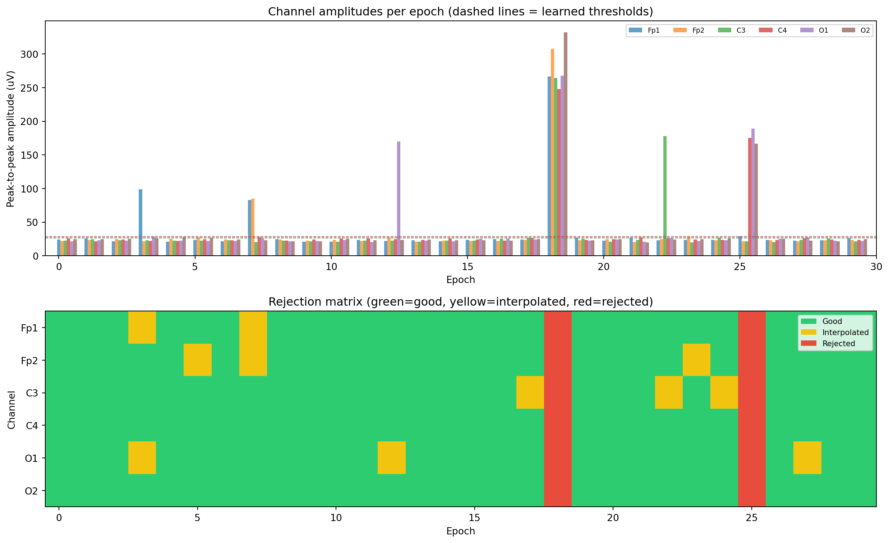

# Install autoreject
# pip install autorejectAutomated artifact rejection with autoreject
artifacts
automation
epochs
What autoreject does (learns channel-specific peak-to-peak thresholds), how it differs from simple amplitude rejection, the AutoReject and RejectLog classes, combining autoreject with ICA, and the RANSAC approach for bad channel detection.
Why simple thresholds are not enough
The standard approach to epoch rejection is to set a single amplitude threshold (say, 100 microvolts) and drop any epoch where any channel exceeds it. This works, but it has two problems.
First, the threshold is the same for all channels. A frontal channel near the eyes will naturally have larger voltage swings than an occipital channel, so a single threshold is either too strict for some channels (dropping clean epochs) or too lenient for others (keeping contaminated ones).
Second, the threshold is the same for all recordings. What counts as “too large” depends on the participant, the electrode impedances, the recording setup, and even the time of day. A threshold that works well for one participant may drop half the epochs for another.
The autoreject package (Jas et al., 2017) addresses both problems by learning channel-specific thresholds from the data itself. It tries many different thresholds for each channel, evaluates how well each one separates clean from noisy epochs, and picks the combination that produces the best overall result.
How autoreject works
The algorithm operates on epoched data and has two main steps:
Step 1: find the best threshold for each channel
For each channel, autoreject tries a range of peak-to-peak amplitude thresholds. For each threshold, it marks epochs that exceed the threshold on that channel as “bad”. It then evaluates the quality of the remaining epochs using cross-validation: it holds out some epochs, trains on the rest, and checks whether the held-out epochs are consistent with the training set. The threshold that gives the best cross-validated score is selected.
Step 2: decide what to do with bad epochs
Once bad epochs and bad channels within epochs are identified, autoreject has three options for each bad channel-epoch pair:
- Keep it: the epoch is clean enough on that channel.
- Interpolate it: the epoch is bad on that channel, but the other channels are fine. The bad channel’s value for that epoch is estimated from its neighbours using spherical spline interpolation.
- Reject it: the epoch is too bad to salvage, even with interpolation. The entire epoch is dropped.
The n_interpolate parameter controls how many bad channels per epoch can be interpolated before the epoch is rejected outright. For example, if n_interpolate=4, an epoch with up to 4 bad channels is interpolated; an epoch with 5 or more bad channels is dropped.
The autoreject API
Installation
AutoReject: the main class
import mne
from autoreject import AutoReject
# Assume you have an Epochs object
# epochs = mne.Epochs(raw, events, event_id, tmin=-0.2, tmax=0.8,
# baseline=(None, 0), preload=True)
# Create the AutoReject object
ar = AutoReject(
n_interpolate=[1, 2, 4, 8], # try these interpolation counts
random_state=42,
n_jobs=1, # parallel processing
verbose=True
)
# Fit and transform (learn thresholds and clean the epochs)
epochs_clean = ar.fit_transform(epochs)
print(f"Original epochs: {len(epochs)}")
print(f"Clean epochs: {len(epochs_clean)}")The RejectLog
Autoreject produces a RejectLog that tells you exactly what happened to each epoch and each channel. This is valuable for understanding your data quality and for reporting in papers.
from autoreject import AutoReject
ar = AutoReject(random_state=42)
epochs_clean, reject_log = ar.fit_transform(epochs, return_log=True)
# reject_log.bad_epochs: boolean array (True = epoch was rejected)
print(f"Rejected epochs: {reject_log.bad_epochs.sum()} "
f"/ {len(reject_log.bad_epochs)}")
# reject_log.labels: array of shape (n_epochs, n_channels)
# 0 = good, 1 = bad (but interpolated), 2 = bad (epoch rejected)
print(f"Labels shape: {reject_log.labels.shape}")
# Visualise the reject log
reject_log.plot(orientation="horizontal")
# Plot the number of bad epochs per channel
reject_log.plot_epochs(epochs)The reject log plot shows a matrix where rows are epochs and columns are channels. Good channel-epoch pairs are white, interpolated pairs are yellow, and rejected epochs are red. This gives you an immediate visual summary of where the problems are.
Getting the learned thresholds
You can inspect the thresholds that autoreject learned for each channel:
# The learned thresholds (peak-to-peak, in volts)
thresholds = ar.threshes_
for ch_name, threshold in zip(epochs.ch_names, thresholds):
print(f"{ch_name}: {threshold * 1e6:.1f} uV")RANSAC for bad channel detection
The autoreject package also includes an implementation of RANSAC (Random Sample Consensus), which detects persistently bad channels. Unlike the main AutoReject class (which works at the epoch level), RANSAC identifies channels that are bad across the entire recording.
The idea behind RANSAC is: for each channel, predict its signal from its neighbours using spherical spline interpolation, then compare the prediction with the actual signal. If they disagree consistently, the channel is bad.
from autoreject import Ransac
ransac = Ransac(verbose=True, n_jobs=1)
epochs_ransac = ransac.fit_transform(epochs)
print(f"Bad channels (RANSAC): {ransac.bad_chs_}")
# You can add these to the raw data's bad channel list
raw.info["bads"] = ransac.bad_chs_RANSAC is a good complement to the variance-based and correlation-based bad channel detection methods described in the bad channels page. It is more principled because it uses the spatial relationship between channels (via interpolation) rather than simple summary statistics.
Combining autoreject with ICA
Autoreject and ICA address different types of artifacts. ICA is best for stereotyped, recurring artifacts (blinks, heartbeat) that affect many epochs. Autoreject is best for sporadic, unpredictable artifacts (electrode pops, movement) that affect individual epochs or channels.
A common workflow uses both:
- Filter the data (1-40 Hz).
- Run ICA to remove blinks and heartbeat artifacts.
- Epoch the cleaned data.
- Run autoreject on the epochs to handle remaining sporadic artifacts.
import mne
from mne.preprocessing import ICA
from autoreject import AutoReject
# Step 1: Filter
raw.filter(l_freq=1.0, h_freq=40.0)
# Step 2: ICA for stereotyped artifacts
ica = ICA(n_components=20, method="infomax",
fit_params=dict(extended=True), random_state=42)
ica.fit(raw)
eog_idx, _ = ica.find_bads_eog(raw, ch_name="Fp1")
ica.exclude = eog_idx
ica.apply(raw)
# Step 3: Epoch
events, event_id = mne.events_from_annotations(raw)
epochs = mne.Epochs(raw, events, event_id,
tmin=-0.2, tmax=0.8,
baseline=(None, 0), preload=True)
# Step 4: Autoreject for sporadic artifacts
ar = AutoReject(random_state=42)
epochs_clean, reject_log = ar.fit_transform(epochs, return_log=True)
print(f"Epochs before autoreject: {len(epochs)}")
print(f"Epochs after autoreject: {len(epochs_clean)}")
print(f"Rejected: {reject_log.bad_epochs.sum()}")Some researchers prefer to run autoreject before ICA to ensure that ICA is fitted on cleaner data. Either order can work; the key is to use both methods for what they are best at.
Working example
Since autoreject may not be installed in your environment, the code below demonstrates the concept of adaptive, channel-specific thresholds using basic numpy operations. We create simulated epochs where some channels in some epochs have been contaminated with large artifacts, then apply a simple version of the autoreject logic: compute channel-specific thresholds based on the distribution of peak-to-peak amplitudes, and decide whether to keep, interpolate, or reject each epoch.
import numpy as np
import matplotlib.pyplot as plt
rng = np.random.default_rng(42)
# ── Simulate epoch data ────────────────────────────────────────
n_epochs = 30
n_channels = 6
n_times = 256 # 1 second at 256 Hz
sfreq = 256
channel_names = ["Fp1", "Fp2", "C3", "C4", "O1", "O2"]
# Normal epochs: 10 Hz oscillation plus noise
epochs_data = np.zeros((n_epochs, n_channels, n_times))
times = np.arange(n_times) / sfreq
for ep in range(n_epochs):
for ch in range(n_channels):
# Base signal: alpha oscillation with random phase
phase = rng.uniform(0, 2 * np.pi)
signal = 5e-6 * np.sin(2 * np.pi * 10 * times + phase)
signal += 3e-6 * rng.standard_normal(n_times)
epochs_data[ep, ch, :] = signal
# Add artifacts to specific epochs and channels
# Epoch 3, channel 0 (Fp1): blink artifact
epochs_data[3, 0, 50:90] += 80e-6 * np.sin(
np.pi * np.arange(40) / 40)
# Epoch 7, channels 0-1 (Fp1, Fp2): blink in both frontal channels
epochs_data[7, 0, 60:100] += 70e-6 * np.sin(
np.pi * np.arange(40) / 40)
epochs_data[7, 1, 60:100] += 65e-6 * np.sin(
np.pi * np.arange(40) / 40)
# Epoch 12, channel 4 (O1): electrode pop
epochs_data[12, 4, 120:125] += 150e-6
# Epoch 18, all channels: movement artifact (reject entirely)
epochs_data[18, :, :] += 50e-6 * rng.standard_normal(
(n_channels, n_times))
# Epoch 22, channel 2 (C3): brief muscle burst
burst = rng.standard_normal(60) * 40e-6
epochs_data[22, 2, 80:140] += burst
# Epoch 25, channels 3-5: widespread noise
epochs_data[25, 3:6, :] += 30e-6 * rng.standard_normal(
(3, n_times))
# ── Compute peak-to-peak amplitude per channel per epoch ──────
ptp = np.ptp(epochs_data, axis=2) # shape: (n_epochs, n_channels)
# ── Learn channel-specific thresholds ─────────────────────────
# Use the median + 3 * MAD as the threshold for each channel
# (a simplified version of what autoreject does)
median_ptp = np.median(ptp, axis=0)
mad_ptp = np.median(np.abs(ptp - median_ptp), axis=0)
thresholds = median_ptp + 3 * mad_ptp
print("Learned thresholds (uV):")
for i, ch in enumerate(channel_names):
print(f" {ch}: {thresholds[i] * 1e6:.1f} uV")
# ── Classify each channel-epoch pair ──────────────────────────
# 0 = good, 1 = bad (interpolate), 2 = bad (reject entire epoch)
labels = np.zeros((n_epochs, n_channels), dtype=int)
max_interpolate = 2 # reject epoch if more than 2 channels are bad
for ep in range(n_epochs):
bad_channels = ptp[ep] > thresholds
n_bad = bad_channels.sum()
if n_bad == 0:
continue # all channels are good
elif n_bad <= max_interpolate:
# Interpolate the bad channels
labels[ep, bad_channels] = 1
else:
# Too many bad channels: reject the entire epoch
labels[ep, :] = 2
n_good = np.sum(labels.max(axis=1) == 0)
n_interpolated = np.sum(labels.max(axis=1) == 1)
n_rejected = np.sum(labels.max(axis=1) == 2)
print(f"\nResults: {n_good} good, {n_interpolated} interpolated, "
f"{n_rejected} rejected (out of {n_epochs})")
# ── Visualisation ──────────────────────────────────────────────
fig, axes = plt.subplots(2, 1, figsize=(13, 8), height_ratios=[1.2, 1])
# Top panel: peak-to-peak amplitudes with thresholds
ax = axes[0]
x_positions = np.arange(n_epochs)
width = 0.12
for ch in range(n_channels):
ax.bar(x_positions + ch * width, ptp[:, ch] * 1e6,
width=width, alpha=0.7, label=channel_names[ch])
# Draw threshold line
ax.axhline(thresholds[ch] * 1e6, color=f"C{ch}",
linestyle="--", alpha=0.4, linewidth=0.8)
ax.set_xlabel("Epoch")
ax.set_ylabel("Peak-to-peak amplitude (uV)")
ax.set_title("Channel amplitudes per epoch (dashed lines = learned thresholds)")
ax.legend(loc="upper right", fontsize=7, ncol=6)
ax.set_xlim(-0.5, n_epochs)
# Bottom panel: rejection matrix
ax = axes[1]
# Map: 0=green, 1=yellow, 2=red
from matplotlib.colors import ListedColormap
cmap = ListedColormap(["#2ecc71", "#f1c40f", "#e74c3c"])
im = ax.imshow(labels.T, aspect="auto", cmap=cmap,
vmin=0, vmax=2, interpolation="nearest")
ax.set_xlabel("Epoch")
ax.set_ylabel("Channel")
ax.set_yticks(range(n_channels))
ax.set_yticklabels(channel_names)
ax.set_title("Rejection matrix (green=good, yellow=interpolated, red=rejected)")
# Add a colour bar
from matplotlib.patches import Patch
legend_elements = [
Patch(facecolor="#2ecc71", label="Good"),
Patch(facecolor="#f1c40f", label="Interpolated"),
Patch(facecolor="#e74c3c", label="Rejected"),
]
ax.legend(handles=legend_elements, loc="upper right", fontsize=8)
plt.tight_layout()
plt.show()Learned thresholds (uV):
Fp1: 27.6 uV
Fp2: 27.2 uV
C3: 26.5 uV
C4: 28.9 uV
O1: 26.2 uV
O2: 28.3 uV
Results: 19 good, 9 interpolated, 2 rejected (out of 30)
The top panel shows the peak-to-peak amplitude for each channel in each epoch. The dashed lines are the learned thresholds (median + 3 MAD), which differ by channel. Epochs where only one or two channels exceed their threshold are interpolated (the bad channels are estimated from neighbours). Epochs where many channels exceed their thresholds are rejected entirely.
The bottom panel shows the rejection matrix: a visual summary of the decisions. Green cells are clean channel-epoch pairs, yellow cells were interpolated, and red cells mark rejected epochs. This is similar to the output of autoreject’s reject_log.plot().
The real autoreject package uses cross-validation to choose thresholds and n_interpolate more carefully, but the core idea is the same: channel-specific thresholds that adapt to the data, with a smart decision about when to interpolate versus when to reject.
Key takeaways
- Autoreject learns channel-specific amplitude thresholds from the data, rather than requiring you to pick a single threshold for all channels and all recordings.
- It operates on epoched data and produces a
RejectLogthat shows exactly which epochs were rejected and which channels were interpolated. - The
n_interpolateparameter controls the trade-off between interpolation and rejection. With a higher value, more epochs survive (because more bad channels are interpolated), but the interpolated data is less reliable. - RANSAC (also in the autoreject package) detects persistently bad channels by comparing each channel’s signal with a prediction from its neighbours.
- Autoreject complements ICA. Use ICA for stereotyped, recurring artifacts (blinks, heartbeat) and autoreject for sporadic artifacts (electrode pops, movement, brief muscle bursts).
- A common workflow is: filter, run ICA, epoch, then run autoreject. This gives you both types of artifact cleaning.
- Always inspect the reject log to understand your data quality. If autoreject is rejecting a large fraction of epochs, there may be a systematic problem (bad channel, persistent muscle tension) that should be addressed earlier in the pipeline.